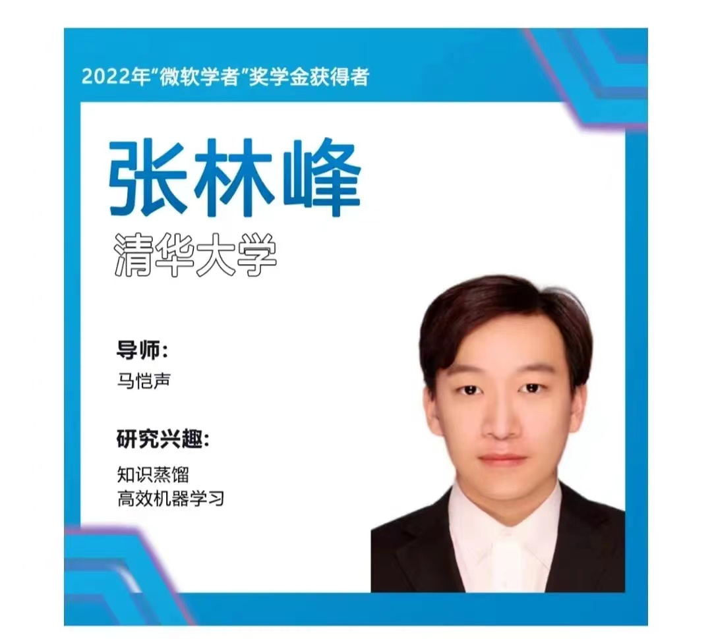
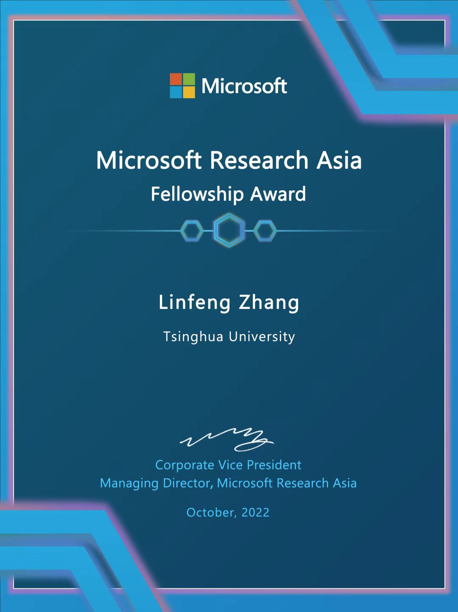
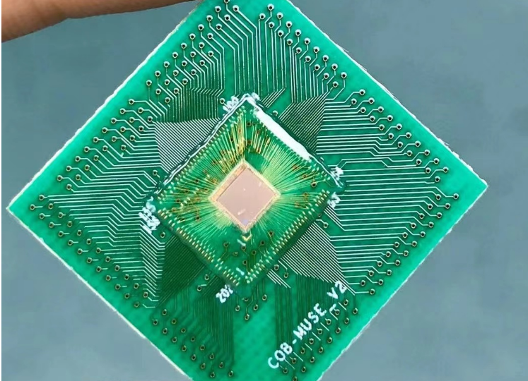
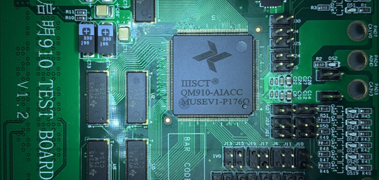
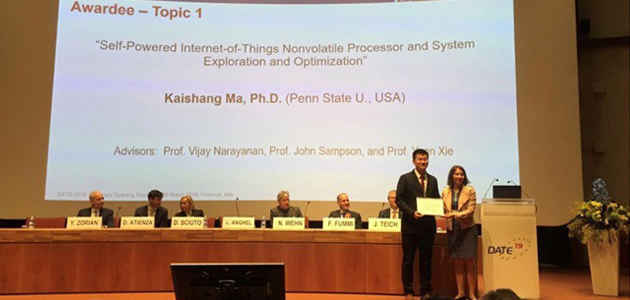

马恺声教授团队发布国内首款基于异构Chiplet集成的智能处理芯片 启明930
Feb 20, 2023 Source: Polar Bear Tech
|
|
该芯片中央控制芯粒采用RISC-V CPU核心，同时可通过高速接口搭载多个功能型芯粒，基于全国产基板材料以及2.5D封装，做到算力可拓展，可用于AI推理、隐私计算、工业智能等不同场景，目前已与多家AI下游场景合作伙伴进行测试。启明930为首款基于Chiplet异构集成的智能处理芯片，该芯片采用12nm工艺生产，HUB Chiplet采用RISC-V CPU核心，可通过灵活搭载多个NPU Side Die提供8~20TOPS（INT8）稠密算力。启明930可独立用于AI加速卡，亦可通过D2D扩展多种功能型Side Die进行集成，具备多种产品形态。 |
交叉信息院BLV Lab2019级博士生张林峰荣获“微软学者”奖学金
Oct 7, 2022 Source: Institute for Interdisciplinary Information Sciences, Tsinghua University
|  |
|
近日，2022 年“微软学者”奖学金获得者名单正式出炉！经过激烈的角逐，交叉信息院2019级博士生张林峰荣获“微软学者”奖学金，导师为交叉信息院马恺声助理教授。据悉，本年度共有 21 名来自亚太地区的博士生获得提名奖，共有12名的优秀博士生最终获得2022 年“微软学者”奖学金... |
马恺声教授荣获2022年度CCF 集成电路Early Career Award
Aug 2, 2022 Source: Institute for Interdisciplinary Information Sciences, Tsinghua University
 |
|
2022年7月29日-7月31日，由中国计算机学会（CCF）主办，CCF集成电路设计专委、容错计算专委、体系结构专委、信息存储技术专委等承办的首届CCF芯片大会在南京召开。交叉信息院助理教授马恺声获颁CCF 集成电路 Early Career Award,以表彰他在AI芯片和Chiplet技术领域所做的学术贡献.这是中国计算机学会体系内目前唯一的一个集成电路专业奖项，每年评选不超过1位获奖人... |
面向低速自动驾驶 马恺声教授团队“启明920”AI加速芯片正式发布
Sept 23, 2020 Source: Institute for Interdisciplinary Information Core Technology
|  |
|
“启明920”是世界上首款面向多模式稀疏与多模式量化的MUSE架构AI芯片，通过软硬件协同设计的思路，对使用图案剪枝（已申请专利）优化的模型，采用了特定技术，实现存储优化与计算加速，能够将神经网络模型实现最高4.5倍的存储压缩，同时充分发挥硬件稀疏计算的效率，硬件加速比可达3.5倍，而神经网络模型精度损害仅在1%以内。该款芯片兼具高能效和高性能，提速能力是同期国际、国内已产芯片的1.5倍左右。同时，“启明920”AI加速芯片配备了整套测试方案，测试效果优良，这在我国芯片领域具有重大意义... |
马恺声教授团队成功研发人工智能加速芯片“启明910”
MAR 03, 2020 Source: Institute for Interdisciplinary Information Core Technology
|  |
|
这一芯片命名为“启明910”，寓意将如晨星闪烁，在天亮前熠熠生辉，引领希望。“启明910”以SRAM→RF→并行计算单元的形式组成。激活数据保存在Data SRAM中，先经过寄存器堆做重排处理，然后分配到四组并行计算单元（4大组SAP单元）中实现计算。在计算模块部分一共设计有256个MAC计算单元，因此每个周期最多可以完成256个MAC计算，即512个操作（1 MAC = 2 OPs）... |
Computer science and engineering graduate wins award for doctoral dissertation
June 03, 2019 Source: The Pennsylvania State University
|  |
|
UNIVERSITY PARK, Pa. — Kaisheng Ma, a 2018 Penn State alumnus of the doctoral computer science and engineering program, recently received the European Design and Automation Association's (EDAA) Ph.D. Outstanding Dissertation Award.... |